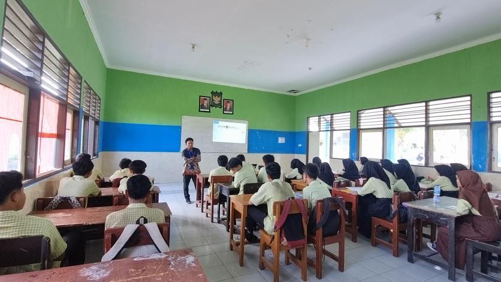
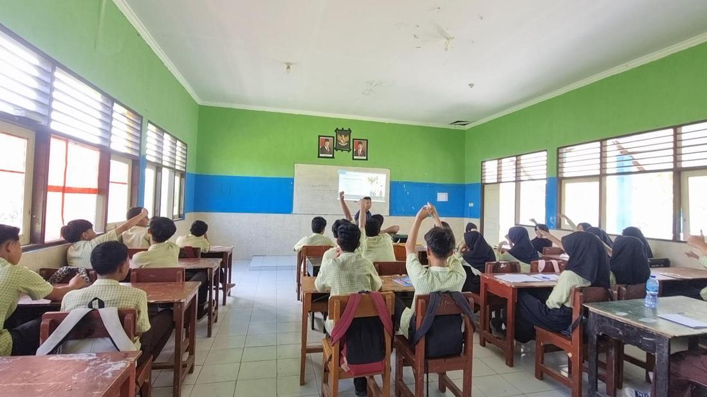
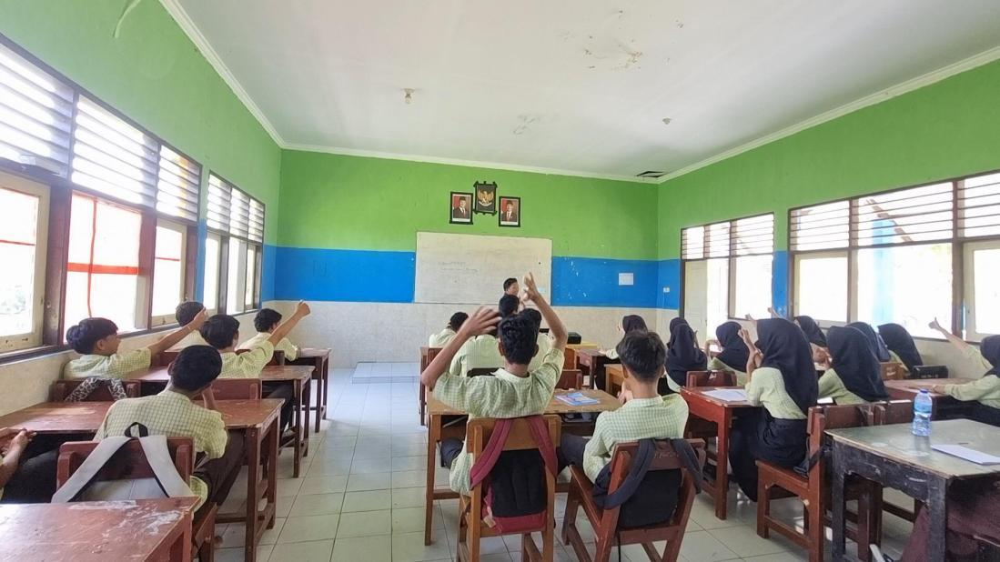
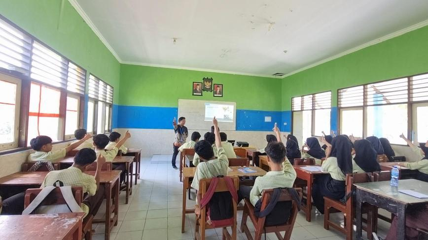
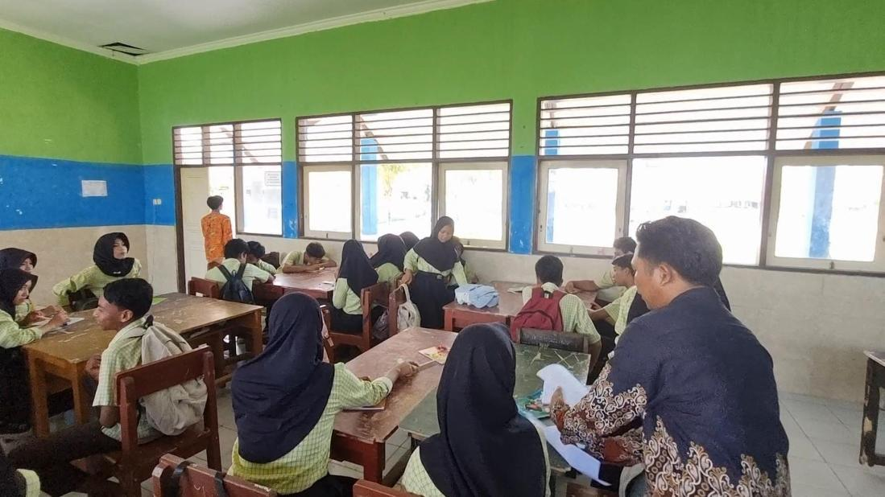
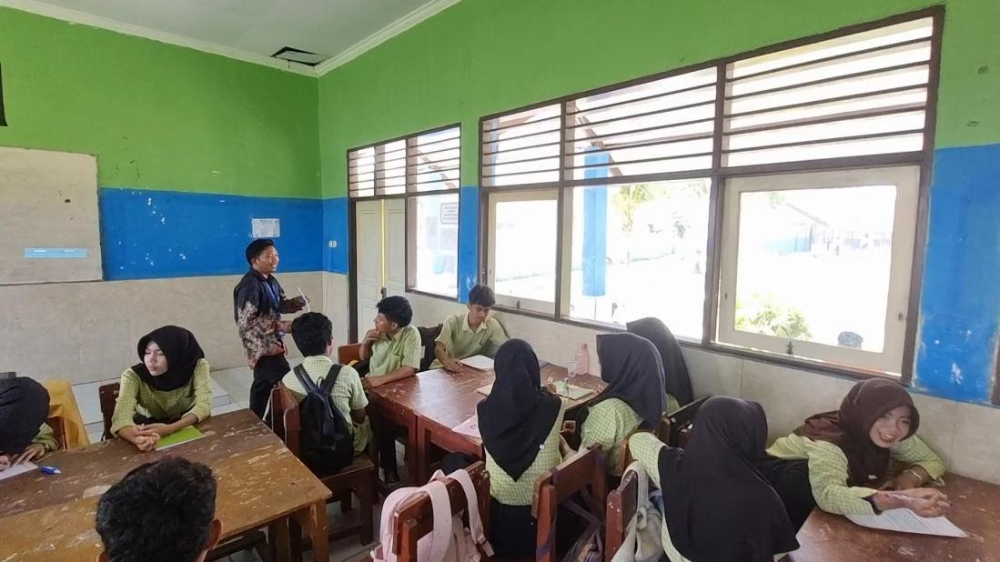
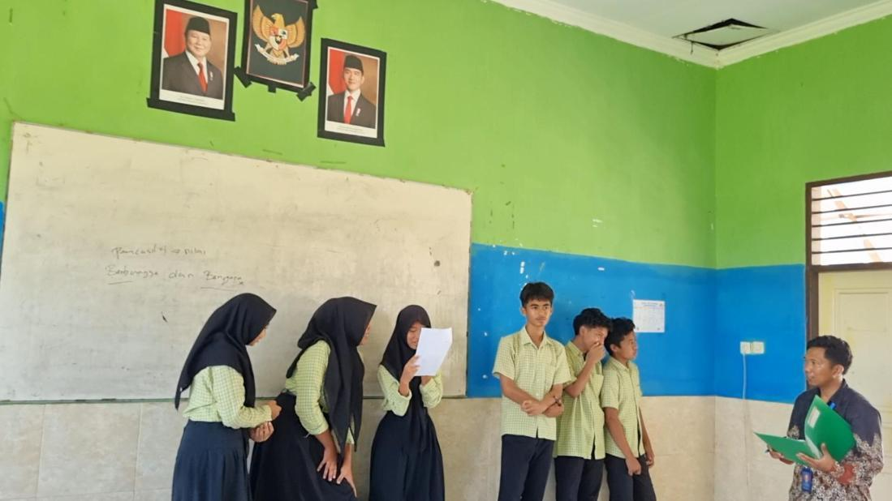
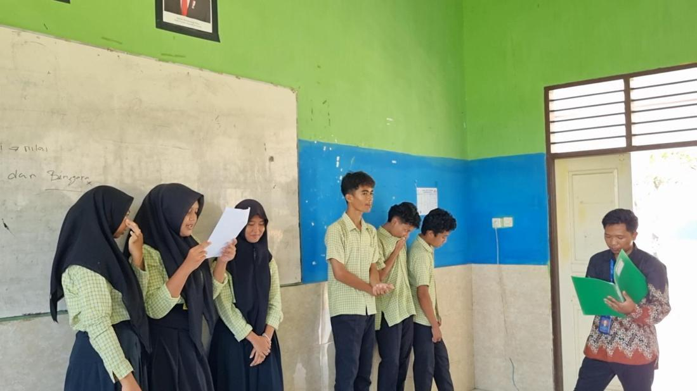
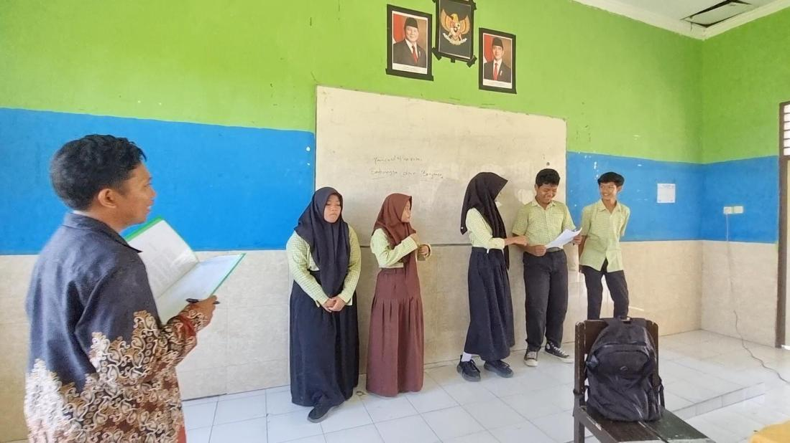
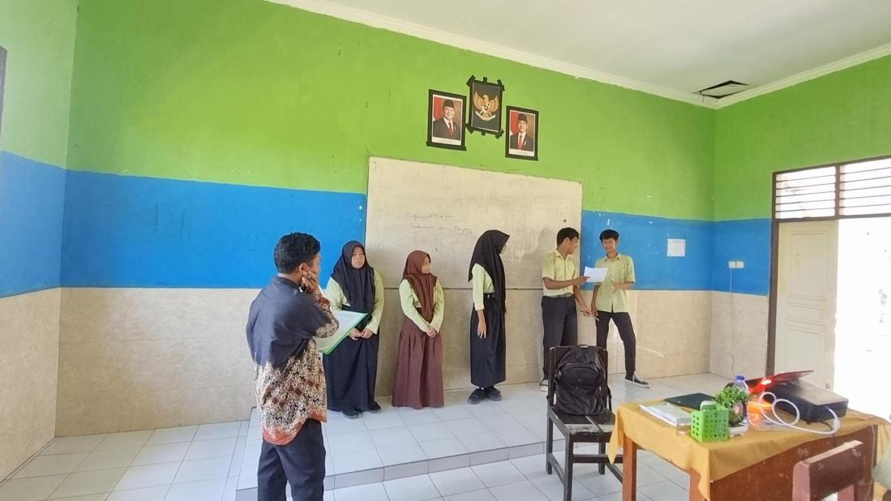

Judul Inovasi : Fokus Pancasila Video Henti dan Bahas dengan Isyarat Tangan sebagai Solusi Praktis Meningkatkan Atensi dan Pemahaman Konseptual Peserta Didik

NIM: 20250120909014
Program Studi Pendidikan Profesi Guru (PPG) PPKn
Universitas Muhammadiyah Mataram (UMMAT)
Identitas Pengembang Karya Inovasi Pembelajaran
Mahasiswa PPG Calon Guru PPKn
Pendidikan Kewarganegaraan, khususnya mata pelajaran Pendidikan Pancasila di tingkat Sekolah Menengah Pertama (SMP), memegang peranan krusial dan strategis dalam membentuk karakter moral, kebangsaan, serta kesadaran hukum peserta didik sebagai warga negara yang baik.
Berdasarkan pengalaman dan refleksi pembelajaran di kelas VII C SMPN 2 Labuapi yang melibatkan 32 peserta didik, ditemukan permasalahan rendahnya atensi peserta didik serta heterogenitas tingkat pemahaman konseptual. Untuk menjawab tantangan ini, dikembangkanlah karya inovasi pembelajaran berjudul FOKUS PANCASILA.
Peserta Didik Kelas VII C
Titik Jeda Video Strategis
Keterlibatan Aktif Siswa
Ringkasan Eksekutif & Struktur Bab Laporan Inovasi Pembelajaran
Pendidikan Pancasila di tingkat SMP sangat strategis dalam membentuk karakter moral dan kebangsaan peserta didik. Di kelas VII C SMPN 2 Labuapi (32 siswa), ditemukan kendala sebagian murid berbicara sendiri atau kurang memperhatikan saat guru menjelaskan. Metode konvensional gagal merangsang keterlibatan kognitif secara optimal. Oleh karena itu, dibutuhkan strategi interaktif FOKUS PANCASILA (Video Henti dan Bahas dengan Isyarat Tangan).
Meningkatkan atensi, keterlibatan aktif secara menyeluruh, serta pemahaman konseptual 32 peserta didik terhadap materi penerapan sila-sila Pancasila melalui asesmen formatif real-time berbasis isyarat jempol.
Strategi FOKUS PANCASILA didukung oleh teori-teori pendidikan terkemuka:
Model pembelajaran aktif berbasis video henti terstruktur (segmented video-based learning) dengan 3 titik jeda kritis, kartu diskusi, respons isyarat jempol, dan LKPD analisis kasus.
Implementasi di kelas VII C SMPN 2 Labuapi menunjukkan hasil yang sangat signifikan berdasarkan asesmen formatif respons isyarat jempol dan LKPD kelompok.
Lihat rincian data asesmen pada menu Data Asesmen di bawah.
Strategi 'FOKUS PANCASILA' terbukti efektif sebagai solusi praktis mengatasi rendahnya atensi dan heterogenitas pemahaman 32 peserta didik di kelas VII C SMPN 2 Labuapi.
Bagi guru untuk diadopsi pada mata pelajaran lain, dan bagi sekolah untuk mendukung fasilitas multimedia yang memadai.
Hasil Respons Isyarat Jempol Peserta Didik (Total: 32 Siswa Kelas VII C SMPN 2 Labuapi)
| Titik Jeda / Materi Video | Jempol Ke Atas (Paham) | Jempol Ke Samping (Agak Ragu) | Jempol Ke Bawah (Belum Paham) | Tindak Lanjut / Scaffolding |
|---|---|---|---|---|
| Titik Jeda 1 (Sila Pertama: Toleransi Beragama) |
19 orang (60%) | 10 orang (30%) | 3 orang (10%) | Penjelasan penguat singkat dan diskusi berpasangan sebentar. |
| Titik Jeda 2 (Sila Ketiga: Gotong Royong Bencana) |
24 orang (75%) | 6 orang (19%) | 2 orang (6%) | Bimbingan scaffolding sebentar dan penguatan konsep persatuan. |
| Titik Jeda 3 (Sila Kelima: Musyawarah & Keadilan) |
28 orang (88%) | 4 orang (12%) | 0 orang (0%) | Penguatan akhir dan pendampingan kelompok mandiri dalam LKPD. |
Dokumentasi Visual 10 Foto Aktivitas Nyata di Kelas VII C SMPN 2 Labuapi Sesuai Laporan Komprehensif

Suasana awal pembelajaran di kelas VII C saat guru menjelaskan materi dan kesiapan siswa.

Guru menginstruksikan strategi interaktif dan siswa memperhatikan instruksi Guru.

Momen pengecekan pemahaman di mana siswa kurang antusias mengangkat tangan dan memberikan respons pada jeda Pertama.

Momen pengecekan pemahaman di mana siswa antusias mengangkat tangan dan memberikan respons pada jeda ketiga.

Suasana diskusi kelompok dan pembimbingan aktif oleh guru dalam pengerjaan LKPD.

Kolaborasi antar peserta didik dalam kelompok kecil menganalisis kasus penerapan Pancasila.

Masing-Masing kelompok mempresentasikan hasil diskusi LKPD di depan kelas.

Sesi presentasi kelompok di hadapan guru dan teman sekelas.

Guru memberikan penilaian dan umpan balik formatif terhadap hasil kerja kelompok.

Refleksi akhir dan penutupan pembelajaran bersama seluruh peserta didik.
Akses Dokumen, Video Aksi Nyata, LKPD, dan Perangkat Pembelajaran
Rekaman pelaksanaan pembelajaran di kelas VII C
Modul ajar dan media pembelajaran interaktif
Paparan materi Pembelajaran melalui slide Power Point presentation
Paparan materi Pembelajaran melalui video youtube yang digunakan untuk jeda
Hasil pengamatan sejawat dan keberhasilan kelas
Rekapitulasi nilai dan lembar kerja peserta didik
Laporan lengkap karya inovasi pembelajaran FOKUS PANCASILA
Dokumen lembar kerja desain inovasi pembelajaran